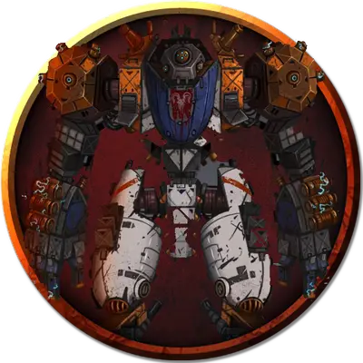

Шокеротоптун
Shockerstomper
Громадный Конструкт, без мировоззрения

Класс Доспеха 18
Хиты 300 (28к20 + 6)
Скорость 40 футов
| мод | спас | ||
|---|---|---|---|
| СИЛ | 23 | +6 | +6 |
| ЛОВ | 10 | +0 | +0 |
| ТЕЛ | 20 | +5 | +5 |
| мод | спас | ||
|---|---|---|---|
| ИНТ | 1 | −5 | −5 |
| МДР | 1 | −5 | −5 |
| ХАР | 1 | −5 | −5 |
Иммунитет к урону психическая энергия, яд
Иммунитет к состояниям глухота, испуг, ослепление, отравление, очарование, паралич
Чувства слепое зрение 60 футов (слеп за его пределами), пассивное Восприятие 5
Опасность 14 (11500 опыта)
Бонус мастерства +5
Особенности
Наэлектризованная поверхность. Существо, заканчивающее свой ход в контакте с корпусом шокеротоптуна (платформа и башенки), должно совершить спасбросок Телосложения Сл 15, получая 22 (4к10) урона электричеством в случае провала или половину этого урона в случае успеха.
Неизменяемая форма. Шокеротоптун обладает иммунитетом ко всем заклинаниям и эффектам, изменяющим его форму.
Модуль управления. Находящееся на платформе шокеротоптуна (или над ней) существо может обнаружить его модуль управления с помощью успешной проверки Интеллекта (Расследование) или Мудрости (Восприятие) Сл 15 .
Действием персонаж может попытаться вскрыть панель для доступа к модулю управления, либо оторвав ее с помощью успешной проверки Силы (Атлетика) Сл 25, либо взломав с помощью воровских инструментов и успешной проверки Ловкости Сл 25 . За встроенной в пол модуля управления панелью, находится пульсирующая кристаллическая полусфера диаметром в 5 футов с КД 10, 25 хитами и иммунитетом к урону ядом и психической энергией. Разрушение полусферы приводит к отключению шокеротоптуна.
Молниевые турели. Персонаж может попытаться заткнуть дюзы молниевых турелей камнем весом в 10 фунтов или подобным предметом с помощью успешной проверки Силы (Атлетика) Сл 15 . Закупоренная таким образом башня не может стрелять молниями, пока существо не использует действие для того, чтобы попытаться убрать препятствие в дюзе, что требует еще одной успешной проверки Силы (Атлетика) Сл 15. Сам шокеротоптун устранить преграду не способен.
Отсоединение. Каждую из механических ног можно атаковать по отдельности, у них по 50 хитов и КД 20. Когда очки прочности у ноги падает до 0, она перестаёт функционировать, и шокеротоптун может реакцией отсоединить её от платформы. Всякий раз, когда одна из его ног отключается, скорость ходьбы шокеротоптуна уменьшается на 10 футов.
Вся эта хитроумная конструкция опрокидывается и вырубается в том случае, если будут отключены четыре из семи его ног.
Действия
Мультиатака. Шокеротоптун совершает три атаки Молниевыми турелями и две атаки Растаптыванием.
Молниевая турель. Башенка выстреливает магической молнией в находящееся в радиусе 60 футов от шокеротоптуна существо. Цель должна совершить спасбросок Ловкости Сл 15, получая 44 (8к10) урона электричеством в случае провала или половину этого урона в случае успеха.
Растаптывание. . Рукопашная атака оружием: +8 к попаданию, досягаемость 10 футов., одна цель. Попадание: 22 (3к10 + 6) дробящего урона.